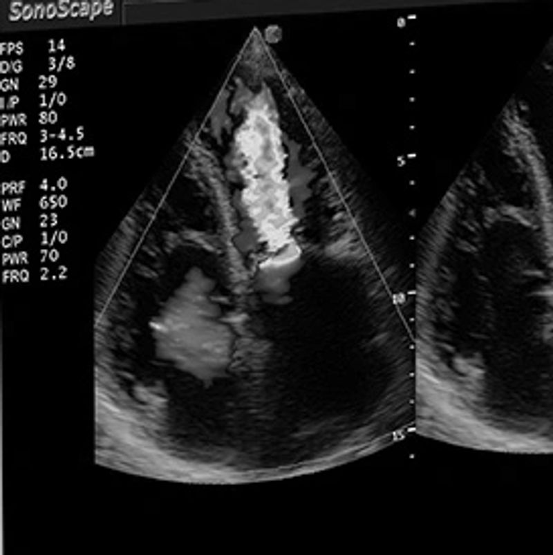

Ultrasonography is the second most commonly used imaging format in veterinary practice. It uses ultrasonic sound waves in the frequency range of 1.5–15 megahertz (MHz) to create images of body structures based on the pattern of echoes reflected from the tissues and organs being imaged.
Several types of image formats can be displayed. The most familiar one (and the one that creates the actual image of anatomy) is B-mode grayscale scanning. The sound beam is produced by a transducer placed in contact with and acoustically coupled by means of a transmission gel to the animal. An ultrashort pulse of sound is directed into the animal, after which the transducer switches to the receive mode. Echoes occur as the sound beam changes velocity while passing from a tissue of one density to one of another density, even when the change occurs at nearly microscopic levels. The greater the change in velocity, the greater the strength of the echo. A small percentage of these echoes are reflected back to the transducer, which then reconverts the energy of the echoes into electrical impulses recorded by the computer in the ultrasound machine. The strength of the echo, the time required for the echo to return after the pulse, and the direction the sound beam that was sent are all recorded. Using information from multiple echoes, the machine creates an image that represents the appearance of the tissues when cut in the same plane on an anatomic specimen.
In modern scanning systems, the sound beam is swept through the body many times per second, producing a dynamic, real-time image that changes as the transducer is moved across the body. This real-time image is easier to interpret and allows the examiner to scan continuously until a satisfactory image is obtained. The image may then be frozen and recorded in a digital format, which also allows for recording of short segments of the real-time scan. As for radiography and all other medical imaging systems, the accepted, legal format for digital ultrasound images is the DICOM III standard.
Ultrasonography cannot be used to scan gas-filled or bony tissues. The sound beam is totally reflected at soft tissue/gas interfaces and absorbed at soft tissue/bone interfaces. Gas and bone also “shadow” any other organs beyond them. Bowel gas can inhibit imaging of adjacent abdominal organs, and the heart must be imaged from locations that do not require the sound beam to pass through the lungs.
Sonographic imaging is also limited in regard to the depth of tissue that can be examined. Most scanners will display tissues to a depth of ~24 cm, but the image is often quite noisy at that depth. This is because most tissue echoes do not return directly to the transducer but are reflected in some other direction. By a depth of 24 cm, the loss of energy from the sound beam results in echoes so weak the scanner cannot separate the returning echoes from the background electronic noise. In addition, some echoes not directly reflected may return to the transducer by reflecting off a tissue outside the beam path. Such echoes require longer to return to the transducer and are depicted at a spurious location, adding noise to the image. Low-frequency transducers can scan deeper than high-frequency transducers, but resolution is decreased. There is much less loss of beam intensity in fluid media such as the urinary bladder, so if the beam passes through such a fluid media, the maximum scanning depth may be increased at the expense of temporal resolution.
Although ultrasound can be used to evaluate most soft tissues, including muscles, tendons, and ligaments, the heart and abdominal organs still constitute the majority of examinations performed in small animals. In scanning of the abdomen, the abdominal structures should be systematically evaluated. Each sonographer develops his or her own system of completely evaluating the abdomen. Systematic evaluation ensures that all structures are scanned. In the past, organs such as the adrenal glands and pancreas were seen only if diseased and enlarged, but modern ultrasound machines operated by an experienced sonographer produce images of such quality that the normal adrenal glands, pancreas, and lymph nodes are routinely imaged even in large dogs.